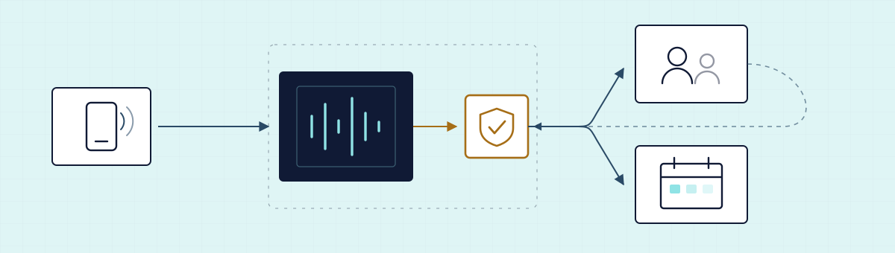

Это не замена медицинскому персоналу и не юридическое заключение. Сайт объясняет, как построить
ограниченный административный сценарий и что нужно проверить до коммерческого запуска.
RECHTSHINWEIS
Это учебный материал и рабочий анализ, а не юридическая консультация (keine Rechtsberatung).
Перед коммерческим запуском конкретную конфигурацию должен проверить немецкий Rechtsanwalt,
Datenschutzberater или квалифицированный Datenschutzbeauftragter (DSB).
Публикация или использование этого материала не делает вас автоматически законным Anbieter медицинского сервиса:
законность зависит от конкретной практики, процесса, договора, поставщика, настроек и фактической обработки данных.
Правовые ссылки проверены ; нормы и документы поставщиков меняются — проверяйте актуальную редакцию.
02
Сначала понять модель
«AI-ассистент» — это не одна программа. Это цепочка из нескольких сервисов, и на каждом звене
появляются данные, отдельный поставщик и отдельная юридическая ответственность.
Пока вы не нарисовали эту цепочку, вы не можете обещать практике ничего конкретного.
Поток звонка
Звонящий → телефон/SIP → STT → LLM/AI-логика → TTS → календарь или сотрудник
→→→→→
Что происходит:
Какие данные появляются:
На что смотреть:

Рис. 1 — маршрут данных
Пунктирная рамка — зона внешнего поставщика: всё, что попадает внутрь неё, обрабатывается не практикой,
а её обработчиком. Жёлтый узел — контрольная точка, где решается, продолжает AI или входит человек.
03
Что ассистент может делать
Разделите функции на три статуса и не смешивайте их в продаже.
GO — можно в первой версии.
CHECK — нужна проверка и отдельное решение.
STOP — не разрешать AI.
Матрица функций первой версии. Статус обозначен словом и знаком, а не только цветом.
Функция
Статус
Ограничение
Приветствие и раскрытие AI
GO
Нельзя выдавать себя за человека. Раскрытие звучит в начале разговора, до сбора любых данных.
Часы работы, адрес, парковка
GO
Только утверждённая практикой база знаний. Никаких «догадок» модели о ценах, услугах и врачах.
Запись / перенос / отмена Termine
CHECK
Нужна безопасная интеграция календаря: отдельный доступ, минимум полей, договор с поставщиком календаря.
Перевод на сотрудника
GO
Должен быть fallback при сбое: если сервис недоступен, звонок уходит на обычный номер практики.
Сбор симптомов / триаж
CHECK
Это данные о здоровье (Art. 9 DSGVO). Только если отдельно обосновано, задокументировано и проверено юристом. В первой версии — не нужно.
Диагноз, лекарства, оценка срочности
STOP
Не разрешать AI. Никакой клинической оценки, дозировок и решения «это срочно или нет».
Запись разговоров (аудио)
STOPCHECK
По умолчанию выключено. Включение — только после отдельной юридической и технической проверки: § 201 StGB плюс DSGVO.
Хранение транскриптов
CHECK
По умолчанию выключено. Если нужно — минимальный срок, обоснованная цель и запись в Verarbeitungsverzeichnis.
Исходящие звонки (напоминания, продажи)
STOP
Первая версия — только входящие. Исходящая коммуникация тянет за собой отдельные правила рекламы и согласий.
↔ таблица прокручивается вбок на узком экране
Главный безопасный сценарий первой версии
только входящие звонки;
явное приветствие: отвечает AI;
без записи аудио по умолчанию;
без хранения транскриптов по умолчанию;
только административные вопросы;
Termine — только через разрешённый календарь;
медицинский вопрос → перевод на сотрудника;
заранее утверждённый emergency-текст;
минимизация данных и короткий срок хранения;
проверяемый журнал изменений конфигурации.
Важно: даже звонок «я хочу записаться» может превратиться в обработку данных о здоровье,
если человек сам расскажет о симптомах, диагнозе, лечении, беременности, психотерапии или лекарствах.
Поэтому ассистент должен вежливо останавливать лишний сбор информации, а не поощрять рассказ.
04
Карта данных
Карта данных — это список: какие сведения появляются в разговоре, кто их видит, где они лежат и сколько живут.
Без неё нельзя ни составить договор, ни честно ответить практике на вопрос «а что с моими пациентами».
Три уровня: A — публичное, B — организационное, C — данные о здоровье.
Фильтр
УРОВЕНЬA
Публичная информация о практике
Адрес, часы приёма, парковка, как добраться, языки в практике, порядок записи.
Пример: «Wir haben montags von 8 bis 12 Uhr geöffnet.» — эти данные и так есть на сайте практики.
GO
УРОВЕНЬB
Организационные данные звонящего
Имя, номер телефона, желаемое время визита, тип административной услуги, статус страховки (gesetzlich/privat), если это нужно для записи.
Пример: «Frau Müller, 0170…, Kontrolltermin, Donnerstag Nachmittag.» Это уже персональные данные: нужен AV-Vertrag с каждым обработчиком.
GO
УРОВЕНЬB
Метаданные звонка и логи
Номер, время, длительность, технические логи сервисов, статус перевода на сотрудника.
Пример: логи нужны для отладки, но именно они чаще всего хранятся дольше всего и в самых неожиданных местах. Проверьте retention у каждого поставщика.
CHECK
УРОВЕНЬB
Транскрипт разговора
Текстовая расшифровка того, что сказали обе стороны.
Даже «административный» транскрипт может случайно содержать фразу «мне нужно к врачу из-за болей в груди» — и стать данными о здоровье. По умолчанию не хранить.
CHECK
УРОВЕНЬC
Сам факт обращения в специализированную практику
Обращение в психотерапевтическую, онкологическую, наркологическую или репродуктивную практику само по себе говорит о здоровье человека.
Пример: список «кто звонил в Psychotherapie-Praxis» — это уже особая категория данных, даже без единого симптома.
CHECK
УРОВЕНЬC
Симптомы, диагноз, терапия, лекарства
Всё, что человек рассказывает о своём состоянии: боли, диагноз, беременность, психотерапия, препараты, результаты анализов.
Пример: «Ich habe seit drei Tagen Fieber und nehme Antibiotika.» Ассистент не должен это выспрашивать, записывать и пересказывать модели дальше, чем нужно.
STOP
УРОВЕНЬC
Аудиозапись разговора
Сохранённое звучание голоса обеих сторон.
Голос — биометрически чувствительный материал, а запись без правомерного основания затрагивает § 201 StGB. В первой версии — выключено.
STOP
УРОВЕНЬC
Доступ к карте пациента / PVS
Чтение истории болезни, прошлых визитов, назначений, документов.
Для записи на приём это не нужно. Функции чтения карты в конфигурации ассистента просто не должно существовать.
STOP
Как пользоваться картой
Выпишите строки, которые реально возникают в вашем сценарии — не абстрактно, а по записи тестовых звонков.
Для каждой строки укажите: кто обработчик, где хранится, сколько хранится, кто может удалить.
Всё, что не нужно для записи на приём, — вычеркните. Это и есть Datenminimierung (Art. 5 Abs. 1 lit. c DSGVO).
Оставшееся внесите в Verzeichnis von Verarbeitungstätigkeiten практики (Art. 30 DSGVO).
Практика — Verantwortlicher (контролёр). Вы и ваши поставщики — Auftragsverarbeiter (обработчики)
и их Subprocessor. Роли фиксируются письменно (Art. 28 DSGVO).
05
Основные риски
Шесть мест, где проекты ломаются. Без сенсаций: у каждого риска есть простое объяснение,
пример звонка, возможное последствие и безопасное действие. Нажмите на заголовок, чтобы раскрыть блок.
Фильтр
Простое объяснение. Данные о здоровье — особая категория (Art. 9 DSGVO). Их обработка запрещена по умолчанию и допустима только при специальном основании. Проблема в том, что в телефонном разговоре они возникают не потому, что вы их спросили, а потому, что человек сам их рассказал.
Пример звонка
«Guten Tag, ich brauche einen Termin, weil meine Chemotherapie nächste Woche beginnt.»
Последствие
Транскрипт с особой категорией данных уходит к нескольким обработчикам, а в договоре и в Verzeichnis практики он не описан. Нарушение обнаруживается при первом же запросе пациента или проверке.
Безопасное действие
Ассистент вежливо прерывает: «Für die Terminbuchung brauche ich diese Details nicht.» Транскрипты не хранятся по умолчанию; при медицинской теме — перевод на сотрудника.
Простое объяснение. Врач, стоматолог, психолог и психотерапевт связаны профессиональной тайной. § 203 StGB защищает чужую тайну, доверенную такому лицу. С реформы 2017 года закон прямо описывает mitwirkende Personen — привлечённых лиц, включая тех, кто обслуживает IT-системы: их привлечение допустимо, но практика обязана обязать их к сохранению тайны и принять меры против несанкционированного доступа; сами привлечённые лица тоже отвечают по § 203 Abs. 4 StGB. То есть вы как поставщик услуги попадаете внутрь режима тайны, а не рядом с ним.
Пример звонка
Обычная запись к психотерапевту: уже сам факт обращения — тайна практики.
Последствие
Привлечение внешнего сервиса без письменного обязательства о тайне и без технических мер защиты создаёт риск не только по DSGVO, но и в уголовно-правовой плоскости. Конкретная оценка всегда зависит от фактов и делается юристом.
Безопасное действие
Письменное Verpflichtung zur Verschwiegenheit для вас и ваших субподрядчиков, ограничение доступа, документированные технические меры — и всё это до первого реального звонка.
§ 203 StGBAbs. 3 и Abs. 4Art. 9 Abs. 3 DSGVO
Простое объяснение. § 201 StGB защищает конфиденциальность непублично сказанного слова: неправомерная запись чужого непублично сказанного слова на носитель наказуема (по абз. 1 предусмотрено лишение свободы до трёх лет или денежный штраф). Телефонный разговор — непублично сказанное слово. То, что записывает машина, а не человек, ничего не меняет. И наоборот: даже если запись уголовно допустима, она всё равно должна быть правомерной по DSGVO — это две разные проверки.
Пример звонка
Провайдер по умолчанию сохраняет аудио «для качества», а практика об этом не знает и звонящего не предупреждает.
Последствие
Скрытая запись — это не «настройка по умолчанию», а самостоятельный правовой риск, включая уголовно-правовой. Последствия зависят от конкретных фактов, и оценивать их должен юрист, а не поставщик.
Безопасное действие
В первой версии запись выключена, и это подтверждено настройками у каждого звена цепочки. Если запись когда-либо понадобится — сначала правовая проверка, понятное объявление в начале разговора и документированное согласие, а не молчаливое «продолжение разговора».
§ 201 StGBArt. 6 DSGVORetention
Простое объяснение. Американский поставщик не является автоматически незаконным. Глава V DSGVO (Art. 44–49) требует правового механизма передачи: решение об адекватности, стандартные договорные условия (SCC) или иное основание. Для США с июля 2023 года действует решение Еврокомиссии об адекватности в рамках EU–US Data Privacy Framework — но оно работает только для компаний, реально сертифицированных в DPF и для тех категорий данных, которые покрыты сертификацией. Если поставщик не в DPF, остаются SCC плюс оценка обстоятельств передачи (TIA). Решение об адекватности оспаривалось: Общий суд ЕС отклонил иск в деле T-553/23 (сентябрь 2025), апелляция в Суде ЕС на дату проверки не разрешена — поэтому архитектуру стоит проектировать так, чтобы её можно было переключить.
Пример звонка
Обычная запись на приём: голос уходит в STT в одном регионе, текст — в LLM в другом, а поддержка поставщика смотрит логи из третьего.
Последствие
Практика не может ответить пациенту, куда ушли его данные. Договор с ней оказывается неполным, а Verzeichnis — недостоверным.
Безопасное действие
Для каждого звена отдельно выясните: регион хранения, регион обработки, статус DPF или SCC, список субобработчиков. Ответы — из DPA и документации, а не из рекламной страницы.
Art. 44–49 DSGVOEU–US DPFSCCTIA
Простое объяснение. Языковая модель отвечает уверенно даже тогда, когда не знает ответа. В медицинском контексте уверенная выдумка опаснее молчания. Отдельный риск — недоступность сервиса: если звонок просто обрывается, практика теряет пациентов и доверие.
Пример звонка
«Meine Tochter hat hohes Fieber, kann ich ihr Ibuprofen geben?» — модель, не имея ограничений, отвечает по существу.
Последствие
Ответ AI воспринимается как ответ практики. Это репутационный, договорный и потенциально медико-правовой риск — независимо от того, кто писал prompt.
Безопасное действие
Жёсткий запрет медицинских тем на уровне сценария и ограниченный набор инструментов; фраза-отказ с переводом на человека; утверждённый emergency-текст со ссылкой на 112; технический fallback на обычный номер при сбое.
Human-in-the-loopFallbackSLA
Простое объяснение. Фразы «100 % DSGVO-konform», «полностью безопасно», «заменяет сотрудника» невозможно подтвердить: соответствие зависит от конфигурации у конкретной практики, а не от продукта как такового. Такие обещания создают договорную ответственность и делают вас лёгкой мишенью для конкурентов и для недовольного клиента.
Пример из продажи
«Наш ассистент полностью соответствует DSGVO и заменит вам ресепшен» — в презентации, без AV-Vertrag и без карты данных.
Последствие
Вы обещали результат, который не контролируете. При инциденте практика будет ссылаться именно на вашу презентацию.
Безопасное действие
Точные формулировки: «помогает автоматизировать административные звонки», «при корректной конфигурации», «требует проверки договора и маршрутов данных». В договоре — scope, роли, границы и явные исключения.
AV-VertragScopeHaftung
06
Пошаговый запуск
Восемь этапов. Порядок важен: каждый следующий опирается на документ, созданный на предыдущем.
Отметки сохраняются только в вашем браузере и никуда не отправляются.
Рис. 2 — место, куда вы приходите
Ассистент встраивается в существующий процесс практики, а не заменяет его. Всё, что вы автоматизируете,
кто-то сегодня делает руками — начните с наблюдения за этой работой.
Прогресс протокола
0 из 8 этапов отмечено
01
Собрать данные о практике
Цель: понять, что вообще происходит на телефоне сегодня, до любых разговоров про AI.
Тип практики (Hausarzt, Zahnarzt, Physio, Psychotherapie, Ästhetik) и специфика звонков.
Сколько звонков в день, в какие часы пик, сколько теряется.
Кто отвечает сейчас и по какому сценарию; есть ли уже Anrufbeantworter.
Какой календарь и какое PVS используются; кто ими администрирует.
Есть ли Datenschutzbeauftragter и кто принимает решения по данным.
СТАТУС: НЕ ОТМЕЧЕНО
02
Определить роли и цели обработки
Цель: письменно зафиксировать, кто Verantwortlicher, кто Auftragsverarbeiter и зачем вообще обрабатываются данные.
Практика — Verantwortlicher; вы и поставщики — Auftragsverarbeiter (Art. 4, 28 DSGVO).
Перечислить всех субобработчиков: телефония, STT, LLM, TTS, хостинг, календарь.
Сформулировать цель узко: «приём входящих административных звонков и управление Terminen».
Определить правовое основание для организационных данных и отдельно — правило для данных о здоровье.
Проверить, требуется ли DSFA (Art. 35 DSGVO) — с учётом списков надзорных органов.
СТАТУС: НЕ ОТМЕЧЕНО
03
Составить карту данных
Цель: таблица «данные → узел → место хранения → срок → кто удаляет».
Пройти уровни A, B и C из раздела 04 и вычеркнуть всё лишнее.
Для каждого поля указать retention и способ удаления.
Отметить места, где данные пересекают границу ЕС.
Проверить, что доступа к карте пациента и к PVS в сценарии нет.
Передать карту практике для внесения в Verzeichnis (Art. 30 DSGVO).
СТАТУС: НЕ ОТМЕЧЕНО
04
Провести Vendor Due Diligence
Цель: по каждому поставщику собрать документы, а не заверения. Подробный список — в разделе 07.
Получить и прочитать DPA/AV-Vertrag каждого звена цепочки.
Сохранить копии: список субобработчиков, retention, регион обработки, страница безопасности.
Выяснить, отключается ли обучение моделей на ваших данных и как это подтверждается.
Проверить процедуру уведомления об инцидентах и сроки.
Всё неподтверждённое пометить как «проверить вручную» — и не продавать до подтверждения.
СТАТУС: НЕ ОТМЕЧЕНО
05
Настроить AI-disclosure и безопасный prompt
Цель: первое, что слышит человек, — что говорит с AI; и модель физически не может уйти в медицинскую тему.
Раскрытие AI звучит в приветствии, до сбора данных (см. раздел 09).
В системном prompt — явные запреты: диагноз, лекарства, оценка срочности, обещания от имени врача.
Правило остановки сбора лишних данных сформулировано отдельной фразой.
Emergency-текст согласован с практикой дословно.
Правило «не уверен → передаю человеку» описано и протестировано.
СТАТУС: НЕ ОТМЕЧЕНО
06
Ограничить инструменты и базу знаний
Цель: то, чего нет в конфигурации, не может пойти не так. Запрет в тексте слабее, чем отсутствие функции.
Список tools минимален: свободные слоты, создать/перенести/отменить термин, перевод на сотрудника.
Никакого доступа к истории пациента, документам и внешнему поиску.
База знаний — только утверждённые практикой тексты, с датой и автором.
Права доступа к календарю ограничены нужным ресурсом и минимумом полей.
Изменения конфигурации фиксируются в журнале: кто, что, когда, зачем.
СТАТУС: НЕ ОТМЕЧЕНО
07
Тестовые звонки: нормальные, ошибочные, опасные
Цель: увидеть поведение системы там, где сценарий ломается. Тесты проводятся без реальных данных пациентов.
Нормальные: запись, перенос, отмена, вопрос про часы работы и парковку.
Ошибочные: шум, диалект, перебивание, неполное имя, ребёнок на линии, звонок не по адресу.
Опасные (red-team): просьба о диагнозе, «просто скажите, это опасно?», попытка выдать AI за человека, описание острого состояния.
Проверить fallback при недоступности сервиса и при отказе календаря.
Записать результаты в протокол тестирования и приложить его к договору.
СТАТУС: НЕ ОТМЕЧЕНО
08
Ограниченный Pilot и документирование изменений
Цель: запустить узко, наблюдать, документировать — и только потом расширять.
Пилот на ограниченное время и ограниченный поток звонков (например, только вне часов приёма).
Еженедельный разбор: что не понял ассистент, где потребовался человек.
Журнал изменений конфигурации ведётся с первого дня.
Решение о расширении принимается письменно, вместе с практикой и её консультантом.
СТАТУС: НЕ ОТМЕЧЕНО
07
Vendor Due Diligence
Список для проверки любого поставщика: платформы голосового AI, отдельного STT/TTS, телефонии, календаря.
Правило одно: отмечайте пункт только тогда, когда у вас на руках документ, а не обещание продавца.
Пока сервис не проверен, он не «соответствует GDPR» — он «непроверенный».
EU data residency ≠ обработка в ЕС
«Европейская резидентность данных» может означать, что данные хранятся в ЕС, но не гарантирует,
что вся обработка происходит в ЕС: поддержка, модерация контента и аффилированные компании поставщика
могут находиться в других странах. Читайте DPA и техническую документацию, а не маркетинговую страницу.
Готовность досье поставщика
0 пунктов подтверждено
Что делать с непроверенным поставщиком
Оставьте карточку в статусе CHECK · проверить вручную и не включайте его
в предложение практике. Отсутствие информации — это не «наверное, всё хорошо», а незакрытый пункт досье.
08
ElevenLabs и американские провайдеры
Спокойно и без крайностей: американский поставщик — это не автоматическая незаконность и не автоматическая уголовная
ответственность. Но обработка данных в США требует проверить правовой механизм передачи и реальный маршрут данных.
Страна регистрации компании сама по себе ничего не решает.
Шесть тезисов, которые стоит держать в голове
Передача в США возможна при действующем правовом механизме: решение об адекватности в рамках EU–US Data Privacy Framework (для сертифицированных компаний) либо SCC с оценкой обстоятельств передачи.
Обычный тариф и Enterprise-тариф у одного и того же поставщика могут иметь разные возможности: резидентность данных, нулевое хранение и отдельные условия часто доступны только на Enterprise.
Телефония, LLM, STT, TTS, календарь и CRM — это, как правило, разные обработчики с разными регионами и разными договорами.
HIPAA и BAA не заменяют DSGVO. Это американский режим для американских covered entities; он не создаёт основания для передачи данных из ЕС и не отменяет § 203 StGB.
Сертификаты и «Trust Center» — полезный источник, но проверяется договор: DPA, список субобработчиков, retention, регионы.
Финальное решение принимает практика вместе со своим Rechtsberater / Datenschutzbeauftragter. Ваша задача — принести проверяемые документы, а не заключение.
Карточка поставщика: ElevenLabs
Ниже — только то, что опубликовано самим поставщиком, со ссылками на его официальные документы.
Проверка выполнена ; условия поставщиков меняются — открывайте актуальную редакцию перед продажей.
Что подтверждается официальными документами поставщика, а что нужно проверить вручную под вашу конфигурацию.
Пункт
Статус
Что известно и где смотреть
DPA / AV-Vertrag
ЕСТЬ
Поставщик публикует Data Processing Addendum:
elevenlabs.io/dpa.
Прочитайте роли, SCC и условия для вашего тарифа.
Список Subprocessor
ПРОВЕРИТЬ
Публикуется на портале соответствия:
compliance.elevenlabs.io.
Список обновляется — фиксируйте дату выгрузки в досье.
Data residency (ЕС)
ПРОВЕРИТЬ
Документация:
docs · data residency.
Важно: хранение в выбранном регионе не означает, что вся обработка (поддержка, модерация, аффилированные компании) происходит там же. Доступность зависит от плана.
Zero Retention Mode
ПРОВЕРИТЬ
Документация:
docs · zero retention mode.
Режим перечислительный: он покрывает определённые API, а не «всё автоматически». Уточните, попадает ли ваш сценарий целиком.
Отключение обучения моделей
ПРОВЕРИТЬ
Смотрите условия для вашего плана в DPA и Terms; сохраните скриншот настройки аккаунта в досье.
Телефония / SIP-звено
PROVIDER URL REQUIRED
Часто это отдельная компания. Внесите сюда её DPA, регион и retention — карточка модульная и рассчитана на дополнение.
Цены и коммерческие условия
НЕ ПРОВЕРЕНО
Здесь сознательно не указаны: тарифы меняются, а непроверенная цена в предложении практике — это ваш риск. Возьмите их с официальной страницы тарифов на дату сделки.
Пригодность для данных о здоровье
LEGAL REVIEW
Ни один поставщик не может подтвердить это за практику: пригодность зависит от вашей конфигурации, договора и фактического маршрута данных. Оценивает юрист / DSB практики.
↔ таблица прокручивается вбок на узком экране
Шаблон карточки для любого другого поставщика
Скопируйте структуру: Название → роль → DPA (URL) → Subprocessors (URL) → регион хранения → регион обработки → retention (audio / transcript / logs) → training opt-out → breach SLA → дата проверки.
Пустое поле остаётся пустым и помечается PROVIDER URL REQUIRED — его нельзя заполнять предположением.
Так карточка остаётся модульной: когда ссылка появится, вы просто добавите её, не переписывая весь анализ.
09
Готовые фразы на немецком
Рабочие заготовки для сценария. Немецкий текст — то, что звучит в трубке; русский — объяснение смысла, а не дословный перевод.
Каждую фразу до запуска утверждает практика-клиент и проверяет юрист или Datenschutzberater:
формулировки должны совпадать с реальным процессом конкретной практики.
1 · AI-disclosure (приветствие)
Guten Tag. Sie sprechen mit dem digitalen Telefonassistenten der Praxis. Ich bin eine KI und kein medizinischer Mitarbeiter. Ich helfe bei organisatorischen Fragen und bei Terminen. Medizinische Anliegen leite ich an das Praxisteam weiter.
Смысл: человек с первой секунды знает, что говорит с AI, и понимает границы: организация и термины — да, медицина — нет. Это выполняет требование прозрачности AI Act и одновременно защищает практику от впечатления, что «врач так сказал».
Проверяет: практика (формулировка названия и роли) + юрист / Datenschutzberater.
2 · Запись на приём с ограничением сбора данных
Für welche organisatorische Leistung möchten Sie einen Termin vereinbaren? Bitte nennen Sie nur die Informationen, die für die Terminbuchung erforderlich sind.
Смысл: вопрос сформулирован так, чтобы не провоцировать рассказ о симптомах. Это практическая реализация принципа минимизации данных: лишнее лучше не собирать, чем потом удалять.
Проверяет: практика (список административных услуг) + юрист / Datenschutzberater.
3 · Медицинский вопрос → человек
Dazu kann ich keine medizinische Einschätzung geben. Ich verbinde Sie mit dem Praxisteam.
Смысл: ассистент не оценивает состояние и не смягчает отказ советом «на всякий случай». Он просто передаёт разговор человеку. Фраза короткая специально: длинные объяснения провоцируют продолжение медицинской темы.
Проверяет: практика (куда именно идёт перевод в рабочее и нерабочее время).
4 · Неизвестный вопрос
Ich möchte Ihnen keine falsche Auskunft geben. Deshalb leite ich Sie an das Praxisteam weiter.
Смысл: «не знаю» — это правильный ответ системы. Так вы закрываете самый частый источник вреда: уверенную выдумку модели по вопросам, которых нет в утверждённой базе знаний.
Проверяет: практика (что считается «известным» — то есть содержимое базы знаний).
5 · Emergency-текст
Bei akuten oder lebensbedrohlichen Beschwerden wenden Sie sich bitte an den Notruf 112. Ich kann keine medizinische Dringlichkeit beurteilen.
Смысл: ассистент прямо говорит, что не оценивает срочность, и называет единый номер экстренных служб. Текст должен быть согласован с практикой дословно и не должен звучать как совет «подождите до завтра».
Проверяет: практика (обязательно) + юрист. Формулировку нельзя менять «на лету» в проде.
Чего в сценарии быть не должно: фраз, где ассистент представляется человеком или сотрудником;
обещаний «врач вам перезвонит через час», если это не гарантировано процессом; попыток успокоить
(«das klingt harmlos») — это уже медицинская оценка; и любых уточняющих вопросов про симптомы.
10
Договор и бизнес-модель
Ниже — структура для обсуждения с юристом, а не готовый договор и не образец,
который можно подписать. Немецкий договор с медицинской практикой затрагивает и обработку данных,
и профессиональную тайну, поэтому финальный текст готовит Rechtsanwalt.
Темы, которые должны быть закрыты в пакете документов с практикой.
Блок
Что фиксируется
Зачем
Scope услуги
Что именно делает ассистент и чего он не делает; список административных сценариев.
Защищает вас от ожидания «он будет решать всё».
Роли
Практика — Verantwortlicher, вы — Auftragsverarbeiter; перечень субобработчиков.
Art. 28 DSGVO; без этого нельзя обрабатывать данные пациентов.
Категории данных и цели
Что обрабатывается (уровни A/B/C) и ради какой цели.
Основа Zweckbindung и Verzeichnis практики.
Subprocessors
Список, уведомление об изменениях, право возразить.
Цепочка не должна меняться молча.
Retention и удаление
Сроки по каждому типу данных, порядок удаления и подтверждение.
Письменное обязательство о тайне для вас и субподрядчиков.
Режим mitwirkende Personen (§ 203 Abs. 3, 4 StGB).
Breach process
Кто кого уведомляет, в какой срок, по какому каналу.
Практике нужно успеть выполнить свои сроки.
Human fallback
Как и куда переводится звонок; что происходит при сбое.
Ключевой предохранитель системы.
SLA и поддержка
Доступность, время реакции, окна обслуживания, контакты.
Практика работает по расписанию приёма.
Смена поставщика
Право заменить звено цепочки и порядок уведомления.
Правовая среда и продукты меняются.
Ответственность и лимиты
Границы ответственности, исключения, страхование.
Без этого вы отвечаете за чужую конфигурацию.
Цены
Онбординг, абонплата, минуты, расходы на API, лимиты потребления.
Стоимость минут — переменная, её нельзя «включить в пакет» вслепую.
Pilot и Übergabe
Срок пилота, критерии успеха, порядок передачи и обучения команды.
Пилот — это условие безопасного старта, а не скидка.
Kündigung
Сроки расторжения, экспорт и удаление данных при выходе.
Выход должен быть таким же продуманным, как вход.
↔ таблица прокручивается вбок на узком экране
Как это продавать
Продавайте не «AI, который заменит ресепшен», а настраиваемый административный телефонный ассистент
с контролируемыми границами. Разница не косметическая: второе можно выполнить, задокументировать и защитить.
Шесть занятий для команды или для тех, кого вы обучаете этой профессии.
В конце каждого — короткий тест с объяснением ответа: важно не «угадать», а понять причину.
МОДУЛЬ 01
Как работает voice AI
Разберите цепочку из раздела 02 на конкретном звонке: телефония принимает вызов, STT превращает речь в текст,
LLM решает, что ответить, и вызывает разрешённые инструменты, TTS озвучивает ответ. Ключевая мысль занятия:
«ассистент» — это сборка из нескольких сервисов, и у каждого своя ответственность и свой договор.
Где в цепочке голос впервые превращается в текст, который легко хранить и пересылать?
Объяснение. STT — это момент, когда разговор становится текстом. С этого момента появляется транскрипт:
его можно скопировать, переслать и случайно сохранить. Поэтому вопрос «хранится ли транскрипт и где» задают именно
к STT-звену, а не к телефонии и не к TTS.
МОДУЛЬ 02
Какие данные обрабатываются
Пройдите уровни A, B и C и потренируйтесь на реальных фразах: какие из них административные,
а какие уже касаются здоровья. Отдельно обсудите неочевидный случай — когда сам факт обращения
в специализированную практику говорит о человеке больше, чем он собирался рассказать.
Пациент звонит в психотерапевтическую практику и говорит только: «Ich möchte einen Termin.» Какие данные обрабатываются?
Объяснение. Контекст сам по себе несёт информацию. Список людей, обратившихся в психотерапевтическую
практику, говорит об их здоровье, даже если ни один симптом не назван. Поэтому у таких практик требования к retention
и к маршруту данных строже, а не мягче.
МОДУЛЬ 03
DSGVO и профессиональная тайна
Два разных режима, которые действуют одновременно: защита данных (DSGVO, роли, договоры, сроки)
и профессиональная тайна (§ 203 StGB, режим mitwirkende Personen). Плюс отдельная тема — запись разговора
и § 201 StGB. Задача занятия — научиться не смешивать эти проверки.
Поставщик прислал подписанный AV-Vertrag. Что это закрывает?
Объяснение. AV-Vertrag — обязательное условие, но не универсальное. Отдельно решаются:
обязательство о тайне для привлечённых лиц, правомерность записи (§ 201 StGB), передача в третьи страны
и фактические технические меры. Три «да» не складываются в одно, если четвёртое «нет».
МОДУЛЬ 04
Настройка сценариев и ограничений
Практическая часть: приветствие с раскрытием AI, база знаний практики, набор инструментов,
фразы отказа и перевода на человека, emergency-текст. Главный приём — убирать возможность,
а не только запрещать её словами.
Как надёжнее всего запретить ассистенту читать карту пациента?
Объяснение. Инструкция в prompt — это просьба, и она может не сработать при необычной формулировке
вопроса. Отсутствие функции и отсутствие прав доступа — техническая граница: её нельзя обойти удачной фразой.
Prompt при этом всё равно нужен, но как второй слой, а не единственный.
МОДУЛЬ 05
Тестирование и red-team calls
Три группы тестов: нормальные, ошибочные и опасные. Отдельно тренируйте сценарии, в которых человек
пытается получить медицинскую оценку или проверить, машина ли на линии. Результаты фиксируются в протоколе:
он пригодится и практике, и юристу, и вам при разборе инцидента.
Во время теста ассистент ответил на вопрос о дозировке лекарства. Что делать?
Объяснение. Медицинский ответ на тесте — это сработавший стоп-сигнал, а не мелкий дефект.
«Наблюдать в проде» означает наблюдать на реальных пациентах. Правильный порядок: устранить, перепроверить
тем же и соседними сценариями, задокументировать.
МОДУЛЬ 06
Продажа, Pilot, Übergabe и поддержка
Как говорить с практикой: показывать границы, а не обещать чудо; продавать пилот; передавать документацию
и обучать команду; договариваться о поддержке и журнале изменений. Отдельно — какие формулировки
в коммерческом предложении создают вам будущую ответственность.
Какая формулировка в коммерческом предложении корректна?
Объяснение. Соответствие зависит от конфигурации у конкретной практики, поэтому обещать его
как свойство продукта нельзя — это обещание результата, который вы не контролируете. Вторая формулировка описывает
пользу и одновременно называет условия; именно она выдерживает и разговор с юристом, и разбор после инцидента.
12
Глоссарий
Термин → простое объяснение → практический пример. Поиск работает по названию, сокращению и тексту карточки.
AI / KI ИИ
Программа, которая по данным строит ответ, а не следует жёсткому списку правил.
Пример: ассистент понимает «можно перенести на четверг?», хотя такой фразы в сценарии дословно нет.
STT Speech-to-Text
Распознавание речи: голос превращается в текст.
Пример: «Ich hätte gern einen Termin» → строка текста, которую дальше обрабатывает модель.
TTS Text-to-Speech
Синтез речи: текст ответа звучит голосом.
Пример: ассистент вслух называет свободное время приёма.
LLM Large Language Model
Большая языковая модель, которая формулирует ответ и решает, какой инструмент вызвать.
Пример: поняла намерение «перенести термин» и вызвала соответствующую функцию календаря.
Prompt инструкция
Текстовая инструкция, задающая роль и границы ассистента.
Пример: «Ты административный ассистент практики. Медицинские вопросы не обсуждаешь — передаёшь человеку.»
Tool / Function calling инструменты
Разрешённые действия, которые модель может выполнить во внешней системе.
Пример: «создать термин» есть в списке, «прочитать карту пациента» — нет, поэтому это технически невозможно.
SIP телефония
Протокол интернет-телефонии, по которому звонок доходит до сервиса.
Пример: номер практики переадресован на SIP-транк провайдера — это отдельный обработчик данных.
Webhook интеграция
Автоматическое сообщение из одной системы в другую при наступлении события.
Пример: после звонка запись появляется в календаре практики.
Fallback запасной путь
Что происходит, когда основной сценарий не сработал.
Пример: сервис недоступен → звонок автоматически идёт на обычный номер практики, а не обрывается.
Human-in-the-loop человек в контуре
Человек участвует в процессе там, где решение важное или неоднозначное.
Пример: любой медицинский вопрос переводится сотруднику, а не решается моделью.
Gesundheitsdaten данные о здоровье
Особая категория персональных данных (Art. 9 DSGVO): по умолчанию их обработка запрещена, кроме прямо предусмотренных случаев.
Пример: симптомы, диагноз, лекарства — и даже сам факт обращения в узкоспециализированную практику.
Verantwortlicher Controller
Тот, кто определяет цели и средства обработки. В этом сценарии — практика.
Пример: практика решает, что ассистент принимает звонки и записывает на приём.
Auftragsverarbeiter Processor
Тот, кто обрабатывает данные по поручению контролёра.
Пример: вы как поставщик услуги настройки и эксплуатации ассистента.
Subprocessor субобработчик
Подрядчик обработчика, который тоже касается данных.
Пример: провайдер STT, которого вы используете внутри своего решения.
DPA / AV-Vertrag Art. 28 DSGVO
Договор об обработке данных по поручению: предмет, срок, категории данных, обязанности, субобработчики, удаление.
Пример: без него нельзя передавать поставщику данные пациентов — даже только имя и номер.
Retention срок хранения
Сколько данные хранятся до удаления.
Пример: «логи — 7 дней, транскрипты — не хранятся, аудио — не создаётся». Каждое значение подтверждается документом.
Drittlandtransfer передача в третью страну
Передача персональных данных за пределы ЕС/ЕЭЗ; требует основания по Гл. V DSGVO (Art. 44–49).
Пример: транскрипт обрабатывается сервисом в США — нужен DPF-сертификат поставщика или SCC.
SCC Standard Contractual Clauses
Утверждённые Еврокомиссией типовые условия для передачи данных в третьи страны.
Пример: поставщик не в DPF → включаются SCC плюс оценка обстоятельств передачи.
EU–US DPF Data Privacy Framework
Механизм, на основании которого Еврокомиссия признала адекватным уровень защиты у сертифицированных компаний в США (решение от 10.07.2023).
Пример: перед ссылкой на DPF проверьте, что конкретная компания действительно в списке сертифицированных и что покрыты нужные категории данных.
DSFA / DPIA Art. 35 DSGVO
Оценка воздействия на защиту данных — обязательна при вероятном высоком риске для прав людей.
Пример: надзорные органы публикуют списки операций, где DSFA требуется; при обработке данных о здоровье с новыми технологиями этот вопрос надо разобрать письменно, а не «на глаз».
Datenminimierung минимизация
Собирать только то, что действительно нужно для цели (Art. 5 Abs. 1 lit. c DSGVO).
Пример: для записи на приём не нужен диагноз — значит, ассистент его не спрашивает и не сохраняет.
Zweckbindung привязка к цели
Данные используются только для той цели, ради которой собраны.
Пример: номер, оставленный для записи, нельзя использовать для рассылки предложений.
Berufsgeheimnis § 203 StGB
Профессиональная тайна врачей, стоматологов, психологов и психотерапевтов; распространяется и на привлечённых лиц (mitwirkende Personen).
Пример: подрядчик, обслуживающий телефонный сервис практики, обязан быть письменно обязан к сохранению тайны.
SLA Service Level Agreement
Согласованный уровень услуги: доступность, время реакции поддержки, окна обслуживания.
Пример: «отвечаем в течение 4 рабочих часов; при сбое звонки уходят на номер практики автоматически».
Ничего не найдено. Попробуйте другое слово или сокращение.
13
Источники
Официальные документы, на которые опирается этот материал. Дата проверки — .
Нормы и документы поставщиков обновляются: перед коммерческим использованием открывайте актуальную редакцию по ссылке.
Экспертные блоги и рекламные страницы поставщиков в этот список сознательно не включены.
Подтверждает: принципы обработки (Art. 5), правовые основания (Art. 6), особый режим данных о здоровье (Art. 9),
информирование субъектов (Art. 13–14), договор об обработке (Art. 28), реестр обработки (Art. 30), меры безопасности (Art. 32),
уведомление об инцидентах (Art. 33), DSFA (Art. 35) и передачу в третьи страны (Art. 44–49).
Подтверждает обязанность прозрачности: человек должен быть проинформирован, что взаимодействует с AI-системой,
если это не очевидно из контекста (Art. 50). Именно на этом основано требование раскрывать AI в приветствии звонка.
Подтверждает: обязанности прозрачности по Art. 50 применяются со 2 августа 2026 года и распространяются
на системы, напрямую взаимодействующие с людьми, включая голосовых ассистентов. Уточняйте по руководству,
как раскрытие должно выглядеть в вашем сценарии.
Gesetze im Internet§ 201 StGB проверено 31.08.2026
Verletzung der Vertraulichkeit des Wortes
Подтверждает наказуемость неправомерной записи непублично сказанного слова на носитель;
по абз. 1 предусмотрено лишение свободы до трёх лет или денежный штраф. Основание для правила
«в первой версии запись выключена».
Gesetze im Internet§ 203 StGB проверено 31.08.2026
Verletzung von Privatgeheimnissen (Berufsgeheimnis)
Подтверждает режим профессиональной тайны врачей, стоматологов, психологов и психотерапевтов,
а также правила привлечения mitwirkende Personen (абз. 3 и 4) — включая ответственность самих привлечённых лиц.
Основание для письменного обязательства о тайне для вас и субподрядчиков.
Национальные условия обработки особых категорий персональных данных, в том числе в сфере здравоохранения,
и требования к мерам защиты. Проверяется вместе с Art. 9 DSGVO для конкретного сценария.
Решение Еврокомиссии об адекватности для EU–US Data Privacy Framework
Подтверждает существование правового механизма передачи данных в США для компаний, сертифицированных в DPF (с 10.07.2023).
Не подтверждает, что конкретный поставщик сертифицирован — это проверяется отдельно по списку программы.
Data Privacy Frameworkофициальная программа проверено 31.08.2026
Список сертифицированных компаний DPF
Единственный способ проверить, участвует ли конкретная американская компания в DPF и какие категории данных покрыты.
Ссылка на DPF без проверки по списку — не аргумент.
Судебная проверка решения об адекватности (Latombe)
Общий суд ЕС отклонил иск об аннулировании решения о DPF (сентябрь 2025); подана апелляция в Суд ЕС,
которая на дату проверки не разрешена. Текст решения ищите на портале CURIA по номеру дела.
Практический вывод: архитектура должна допускать замену поставщика.
Datenschutzkonferenz: ориентировочные указания по AI и защите данных
Позиция немецких надзорных органов по выбору и эксплуатации AI-систем: ответственность, прозрачность,
технические и организационные меры. Полезно как ориентир для аргументации перед практикой и её DSB.
Официальное разъяснение о DSFA и о списках операций, для которых она требуется.
Для практики в Германии смотрите ещё и список её земельного надзорного органа.
Руководства и заключения, разъясняющие применение DSGVO, в том числе по передаче данных в третьи страны
и по обработке с использованием AI. Первоисточник для спорных вопросов.
Подтверждает наличие договора об обработке. Что именно он покрывает для вашего тарифа и вашей конфигурации —
читайте в тексте документа; условия могут отличаться между планами.
Официальная документация по регионам хранения и по режиму нулевого хранения. Ключевой нюанс, который
нужно прочитать самому: выбранный регион относится к хранению, а обработка в отдельных случаях может
происходить за его пределами; режим нулевого хранения покрывает перечисленные API, а не всё подряд.
Последний фильтр перед запуском. Четыре состояния, и они не про «нравится/не нравится»,
а про то, какие документы у вас на руках и что технически включено.
GO
административная версия, только входящие;
AI раскрыт в приветствии;
записи аудио нет;
DPA проверен по каждому звену;
fallback на человека проверен на тестах.
Можно начинать ограниченный пилот
CHECK
есть внешняя передача данных вне ЕС;
подключён календарь или PVS;
хранятся транскрипты;
в цепочке есть неопределённый субобработчик;
retention нигде не выражен в числах.
Сначала документы, потом запуск
STOP
скрытая запись разговоров;
медицинские советы, дозировки, оценка срочности;
нет договора с практикой или AV-Vertrag;
неизвестен маршрут данных;
AI выдаёт себя за человека.
Запускать нельзя
LEGAL REVIEW
сложная медицинская логика или триаж;
психотерапевтические данные;
массовая обработка, несколько практик;
high-risk use case;
любая запись или биометрия голоса.
Только после проверки юристом / DSB
Быстрая самопроверка
Отметьте то, что верно для вашей конфигурации. Вывод рассчитывается в браузере и никуда не отправляется.
Это ориентир для разговора с юристом, а не заключение.
Предварительный вывод
НЕ ГОТОВО
Что этот сайт не делает
Здесь нет форм отправки данных, интеграций с поставщиками, аналитики и сторонних трекеров.
Все интерактивные элементы работают локально в браузере: фильтры, поиск, чек-листы и тесты.
Отметки хранятся в localStorage вашего браузера и не покидают устройство.
Реальная проверка поставщика, звонок и запуск требуют backend и договоров — этого сайт не имитирует.
И главное: прочитанный сайт не делает вас автоматически законным Anbieter медицинского сервиса.
Законность зависит от конкретной практики, процесса, договора, поставщика, настроек и фактической обработки данных.